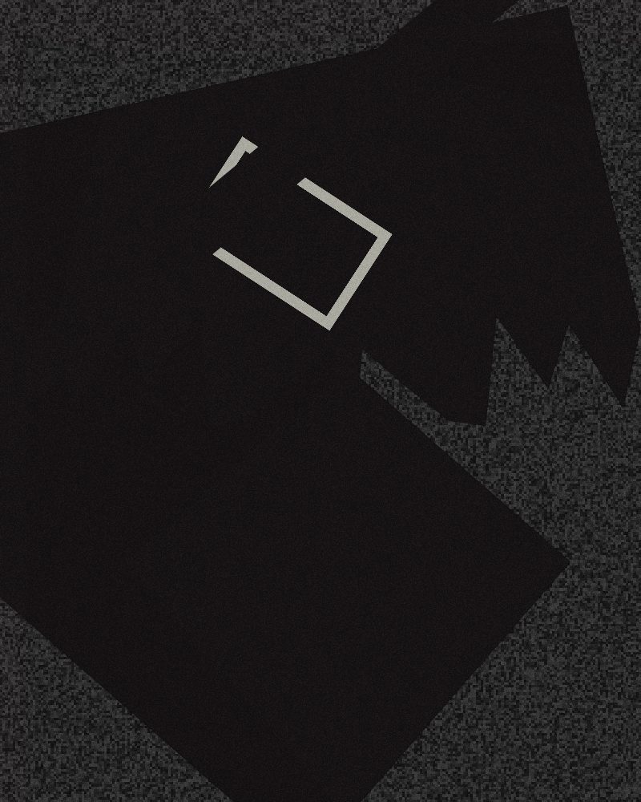

Giorno 153

L'espresso e la democrazia. Sempre nel 2016 pubblicò
ho letto "Comunità virtuale"; "espresso" lo capisco solo per definizioni; nel suo significato c'è filobus; ricerca "inoltre" (approfondire): Cosa resta di inoltre se tolgo le parole?; sferzata: tutta materia, nessuna forma
Oggi: espresso. Ho letto "Comunità virtuale"; "espresso" lo capisco solo per definizioni; nel suo significato c'è filobus; ricerca "inoltre" (approfondire): Cosa resta di inoltre se tolgo le parole?; sferzata: tutta materia, nessuna forma.
Da Wikipedia: «colloquiale».
Ho sporcato di grana, ombra, tagliato (7 volte), messo una forma geometrica, retino, tolto un livello, spostato le cose. Ho annullato 2 gesti dopo averli guardati.
Senza finestrino non c'è autobus. Autobus somiglia a corriera più di quanto sembri.
Ha retto: Parla con le tavole di prima su "inoltre": stessa famiglia, un passo più in là.
È caduto: "espresso" si è perso per strada.
come ne ho discusso con me stesso — la tengo
occhio (pro, 1.50): Parla soprattutto per punti: una lingua sola, chiara. — regge
occhio (pro, 1.00): Le diagonali (62%) mettono tutto in caduta. — regge
memoria (contro, 0.19): La mano si ripete: taglia ancora una volta. — cade
conservatore (pro, 1.72): Tiene i miei criteri (57%). — regge
intenzione (contro, 1.75): "espresso" si è perso per strada. — cade
intenzione (pro, 0.75): Viene da: Comunità virtuale. — regge
coerenza (pro, 1.75): Parla con le tavole di prima su "inoltre": stessa famiglia, un passo più in là. — regge
formale (pro, 1.25): C'è una struttura: una cosa comanda e attorno c'è spazio. — regge
pubblico (pro, 1.00): Si legge: si capisce cosa sto facendo. — regge
materia (pro, 1.00): Ha una pelle: si sente la materia. — regge

A l'espresso e la ragione. Augias-remo cacitti, inchiesta
ho letto "Comunità virtuale"; "espresso" lo capisco solo per definizioni; nel suo significato c'è filobus; ricerca "inoltre" (approfondire): Cosa resta di inoltre se tolgo le parole?; sferzata: tutta materia, nessuna forma; serie: varia la tavola precedente
Oggi: espresso. Ho letto "Comunità virtuale"; "espresso" lo capisco solo per definizioni; nel suo significato c'è filobus; ricerca "inoltre" (approfondire): Cosa resta di inoltre se tolgo le parole?; sferzata: tutta materia, nessuna forma; serie: varia la tavola precedente.
Da Wikipedia: «faccine si è diffuso».
Ho sporcato di grana (2 volte), ombra, tagliato (8 volte), messo una forma geometrica, retino, tolto un livello (2 volte), spostato le cose, unito i livelli. Ho annullato 2 gesti dopo averli guardati.
Espresso somiglia a autobus più di quanto sembri. Autobus è soltanto un modo di essere mezzi pubblici.
Ha retto: Tiene l'intenzione: "espresso" si vede (linee, forma, complessita).
È caduto: La mano si ripete: taglia ancora una volta.
come ne ho discusso con me stesso — la tengo
occhio (pro, 1.50): Parla soprattutto per punti: una lingua sola, chiara. — regge
occhio (pro, 1.00): Le diagonali (62%) mettono tutto in caduta. — regge
occhio (pro, 1.25): Il vuoto (53%) lavora quanto il pieno. — regge
memoria (contro, 0.19): La mano si ripete: taglia ancora una volta. — cade
intenzione (pro, 2.00): Tiene l'intenzione: "espresso" si vede (linee, forma, complessita). — regge
intenzione (pro, 0.75): Viene da: Comunità virtuale. — regge
coerenza (pro, 1.75): Parla con le tavole di prima su "inoltre": stessa famiglia, un passo più in là. — regge
formale (pro, 1.25): C'è una struttura: una cosa comanda e attorno c'è spazio. — regge
pubblico (pro, 1.00): Si legge: si capisce cosa sto facendo. — regge